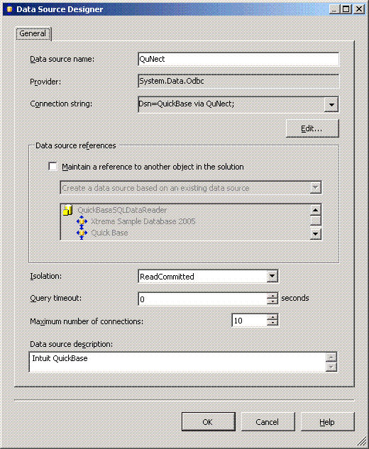
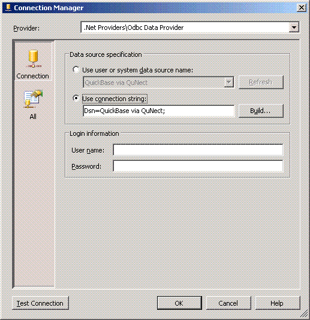

Application Note for QuNect ODBC for QuickBase
Creating a Data Source for Quickbase in SQL Server Integration Services (SSIS)
To create a data source for Quickbase just open up SQL Server Business Intelligence Development Studio and click on the Project menu. Then click on Add New Item.... Then click on the Data Source icon. Then click the Add button. In the wizard click on the Next button. Under Data Connections choose QuickBase via QuNect 64 bit or QuickBase via QuNect 32 bit if you're on a 32 bit operating system. Click Next and then Finish. In the Solution Explorer under Data Sources you will see QuickBase via QuNect.cls. Double click to open up its properties. Make sure its properties look like the figure below.
You'll need to edit the connection string. Under the Data source specification click the connection string radio button. Enter the following connection string Dsn=QuickBase via QuNect; as you see in the figure below. When you install QuNect ODBC for QuickBase it created DSNs (Data Source Names) for you that are called QuickBase via QuNect. These data sources are not configured with a username and password until you enter them manually. Please watch the getting started application note to learn how to configure your DSNs with a username and password. If you don't have a username and password for the QuickBase via QuNect system DSN then your Data Source will not work properly unless you enter a username and password in the Connection Manager.
